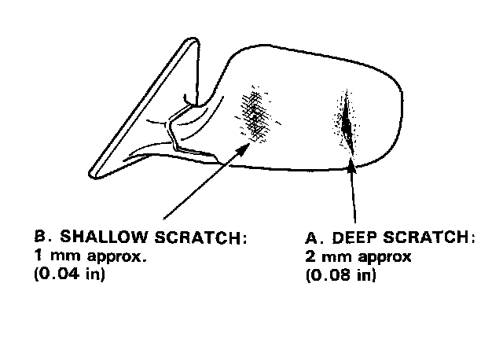

Repair Procedures
Repair Procedures
A. Deep scratches, when filling:
1. Sand the damage section. (#120-#240)
2. Apply the filler and dry.
3. Sand the filler (#240-#400)
4. Coat with the primer/primer surfacer and dry.
5. Sand the primer surfacer. (#600-#800)
6. Top coating.
B. Shallow scratches:
1. Coat with the primer/primer surfacer.
2. Sand the primer surfacer. (#600-#800)
3. Top coating.
C. Repaint:
1. Sand the primer surfacer. (#600-#800)
2. Top coating.